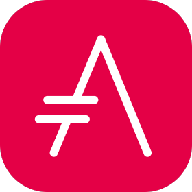

AsciiDoc Guide

| See Writing Guide for ASAM-specific writing style guidelines. |
Introduction
The content of this page is intended to provide a quick overview over the most used features of AsciiDoc.
- Main advantages of using AsciiDoc
-
-
Can be edited in any text editor or using the remote repository’s Web IDE
-
Focus on content, not on formatting!
-
Versionable and diffable – i.e. we can tell who did what, when, and where!
-
In the end, we can deliver an interactive html instead of a static pdf
-
If you want to learn more about AsciiDoc, see the following links:
Besides the general syntax, ASAM standards follow specific ASAM guidelines for AsciiDoc. These are listed below.
Graphics
For most cases, Draw.io shall be used. It’s a possibility to generate graphics with a powerful tool that can be included directly, without a intermediate image format. See DrawIO for usage.
Im some cases, PlantUMl is used to model the relationships. See PlantUML for usage.

PlantUML
PlantUML can be defined in the AsciiDoc file directly or included as a separate file.
Defined in AsciiDoc
[[fig-example-plantuml-code]] (1)
.PlantUML - defined in AsciiDoc (2)
[plantuml, svg] (3)
---- (4)
package "UML Class Diagram" (5)
{
abstract OSC20
interface PhysicalObject
interface TrafficParticipant
entity Vehicle{}
enum IntendedInfrastructure {
driving
sidewalk
biking
}
class dynamicLimits{
maxSpeed
maxAcceleration
maxDeceleration
}
OSC20 <|-- PhysicalObject (6)
PhysicalObject <|-- TrafficParticipant
TrafficParticipant <|-- Vehicle
TrafficParticipant <|-- Person
TrafficParticipant <|-- Animal
'TrafficParticipant
TrafficParticipant -- IntendedInfrastructure
TrafficParticipant -- dynamicLimits
----
| 1 | Anchor for the graphic. Reference this anchor using <<fig-example-plantuml-code>> |
| 2 | Graphic caption |
| 3 | Include of actual graphic |
| 4 | Delimiter for code block |
For Usage of the PlantUML language, see the PlantUML Documentation.
Included from file
[[fig-example-plantuml-file]] (1) .PlantUML - included from file (2) [plantuml, svg] (3) ---- (4) include::../resources/ExamplePlantUML.plantuml[] (5) ----
| 1 | Anchor for the graphic. Reference this anchor using <<fig-example-plantuml-file>> |
| 2 | Graphic caption |
| 3 | Include of actual graphic |
| 4 | Delimiter for code block |
| 5 | include of the code file |
Images with links
You can add a link to an image so it acts like a "button."
Syntax
Use one of the following syntax when adding your image:
image:<file_name>.<ext>[alt=<text>,link=<url>,window=_blank] xref:path-to-file/file.adoc[image:<file_name>.<ext>[alt=<text>]<Link name>^] <url>[image:<file_name>.<ext>[alt=<text>]<Link name>^]
"window=_blank" opens the link in a new browser tab (or window). The addition of "^" at the end of the link name does the same in a shorthand version.
For example:
Admonitions
You might want to draw attention to certain statements by creating notes or tips - so-called admonitions.
Use each of these sparingly. You don’t want to create pages that are full of notes and tips. They become less meaningful if you do.
Here’s what each of these looks like when the AsciiDoc content is turned into HTML:
| This is a note. It includes extra info that a reader might need to know. |
| Here’s a tip. A tip provides useful information that can help a user do something or understand something. |
| This is important information that the reader must be aware of so they don’t do something that they shouldn’t. |
| A caution advises the reader to act carefully. Use this in rare circumstances. |
| And this is a warning that informs of danger or harm. This one should be used very rarely, as well. |
If you’re authoring new content, you’ll want to review this section for some nitty-gritty details.
Tasks
If you’re explaining how to perform a task, you might include introductory information before you get to the steps. And you might need to say what to do after completing the steps. If you do, it’s best to organize that information using headers, which enables scanning.
Use the following headings as needed:
.What you'll need _The information the user needs to complete the task._ .About this task _Some extra contextual info the user might need to know about this task._ .Steps _The individual steps to complete the task._ .What's next? _What the user should do next._
The information the user needs to complete the task.
Some extra contextual info the user might need to know about this task.
The individual steps to complete the task.
What the user should do next.
Each of these should include a . right before the text, like so:
.What you'll need .About this task .Steps .What's next?
This syntax applies bold text in a larger font.
Include code
This section shows how to include code blocks in an ASAM standard. In the standard case, a fragment direcly from a source code file is included, to not have duplicated code in the document. This is shown in chapter [Code as fragment from source code file].
In some cases, e.g. examples, it is also possible to direcly include code in the documentation. This is shown in chapter Code as snippet in document.
Use code fragments from file
| 1 | Anchor for code block. Reference this anchor using <<code-example-code-block>> |
| 2 | Caption of the code block |
| 3 | Caption of the code block |
[[code-example-code-block-tag]] (1) .ASAM example code block using tags (2) [source,js] (3) ---- (4) \include::../resources/examplecode.js[tags=exampleInclude] (5) ---- (6)
| 1 | Anchor for code block. Reference this anchor using <<code-example-code-block-tag>> |
| 2 | Caption of the code block |
| 3 | Sets code highlighting. Possible options: xml, java, .. |
| 4 | Code block delimiter |
| 5 | Directly include source code file with tag marking fragment |
| 6 | Code block delimiter |
| For more information, see the Asciidoctor reference. |
function lorem(ipsum, dolor = 1) {
const sit = ipsum == null ? 0 : ipsum.sit;
dolor = sit - amet(dolor);
return sit ? consectetur(ipsum, 0, dolor < 0 ? 0 : dolor) : [];
}Code as snippet in document
[[code-example-code-block]] (1) .ASAM example code block (2) [source,xml] (3) ---- (4) <ParameterDeclarations> (5) <ParameterDeclaration name="$HostVehicle" parameterType="string" value="car_white"/> <ParameterDeclaration name="$TargetVehicle" parameterType="string" value="car_red"/> <ParameterDeclaration name="$EgoStartS" parameterType="double" value="50"/> <ParameterDeclaration name="$HeadwayTime_LaneChange" parameterType="double" value="0.4"/> <ParameterDeclaration name="$HeadwayTime_Brake" parameterType="double" value="1.0"/> </ParameterDeclarations> ---- (6)
| 1 | Anchor for code block. Reference this anchor using <<code-example-code-block>> |
| 2 | Caption of the code block |
| 3 | Sets code highlighting. Possible options: xml, java, .. |
| 4 | Actual Codeblock |
| 5 | Code block delimiter |
| 6 | Code block delimiter |
<ParameterDeclarations>
<ParameterDeclaration name="$HostVehicle" parameterType="string" value="car_white"/>
<ParameterDeclaration name="$TargetVehicle" parameterType="string" value="car_red"/>
<ParameterDeclaration name="$EgoStartS" parameterType="double" value="50"/>
<ParameterDeclaration name="$HeadwayTime_LaneChange" parameterType="double" value="0.4"/>
<ParameterDeclaration name="$HeadwayTime_Brake" parameterType="double" value="1.0"/>
</ParameterDeclarations>Code & Syntax Highlighting
For inline code, enclose it with ` to apply monospace font.
You must set `volume show -is-encrypted true` before it works.
You must set volume show -is-encrypted true before it works.
For code blocks: the html in the square brackets tells the compiler that this is html source code for source highlighting.
Formulas
This section shows how to include formulas in an ASAM standard.
| This is not final. The anchor does not work as expected. |
[[example-formula]] (1)
.ASAM example formula (2)
[latexmath] (3)
++++ (4)
T(t_{d}) = ((C_{11}(t_{d}) \wedge C_{12}(t_{d})) \vee (C_{21}(t_{d}) \wedge C_{22}(t_{d}) \wedge C_{23}(t_{d})) \vee (C_{31}(t_{d}))) (5)
++++ (6)
| 1 | Anchor for formula. Reference this anchor using <<example-formula>> |
| 2 | Caption for formula |
| 3 | Option for definition of formual. We use latexmath |
| 4 | Code block delimiter |
| 5 | Actual formula as latexmath |
| 6 | Code block delimiter |
Roadmaps
This section shows how to include roadmaps in an ASAM standard.
| Asciidoc preview in VSCode renders the roadmap but does not apply the correct theme ("neutral"). Reason is unclear. |
| Asciidoctor can render mermaid with '-r asciidoctor-diagram' when 'mmdc' is installed. But currently it is not possible to install 'mmdc' in the standard asciidoctor docker image (based on alpine) |
[[fig-example-roadmap]] (1)
.example roadmap (2)
[mermaid, theme="neutral"] (3)
---- (4)
gantt (5)
title OpenSCENARIO 1.X Project Plan - Updated 2021-02 (6)
dateFormat YYYY-MM-DD
section V1.1.0
New features and fixes:a1, 2020-06-01, 2021-01-01 (7)
Review: crit, a2, after a1, 2021-03-07 (8)
Release: crit, a3,after a2, 2021-03-17
section >1.1.0
Prepare new features for next Project: after a3,2021-06-11
Migration path 1.x - 2.0: 2021-04-01, 2021-06-15
---- (9)
| 1 | Anchor for code block. Reference this anchor using <<fig-example-roadmap>> |
| 2 | Caption of the roadmap |
| 3 | Config for the following diagram definition |
| 4 | Code block delimiter |
| 5 | Diagram is of type gantt |
| 6 | Title of the roadmap |
| 7 | Entries are definied with Name: start date, end date. 'a1' is a optional and used for later reference |
| 8 | Entries can be configured. In this case 'crit' is a highlighting. Also note the reference to 'a1' |
| 9 | Code block delimiter |
You can use the Mermaid Live Editor for creating the diagram code block.
Reuse content
If you have a chunk of content that’s repeated across different pages, you can easily write it once and reuse it across those pages. Reuse is possible from within the same repository and across repositories. In the files where you’d like to reuse content:
-
If you’re reusing the content from within the same repository, use the following syntax on a line by itself:
include::<filename>.adoc[]
-
If you’re reusing the content in a different repository, use the following syntax on a line by itself:
include::<FILE_RAW_URL>[]
If you want to learn more about the include directive, check out the AsciiDoctor User Manual.